Kreatyna to jeden z najlepiej przebadanych suplementow diety w historii zywienia sportowego. Po piecdziesiatce stawka jest nie tyle rekord na silowni, ile zachowanie sprawnosci, sily i ostrego umyslu przez kolejne dekady. Sprawdzamy, co naprawde mowi nauka — bez owijania w bawelne.
Szybka odpowiedź
Po 50-tce kreatyna działa najlepiej przy dawce 3-5 g dziennie, łączonej z treningiem siłowym 2-3 razy w tygodniu. Jeśli masz chorobę nerek lub przyjmujesz leki nefrotoksyczne, skonsultuj suplementację przed startem. U większości osób regularne stosowanie poprawia siłę, regenerację i utrzymanie masy mięśniowej.
Kluczowe wnioski
Kluczowe wnioski
- Kreatyna monohydrat polaczona z treningiem silowym istotnie zwieksza sile miesniowa u doroslych po 50-tce — potwierdzaja to metaanalizy obejmujace ponad 1000 uczestnikow.
- Po piecdziesiatce tracimy rocznie 1-2% masy miesniowej i 1,5-5% sily miesniowej — kreatyna jest jednym z nielicznych suplementow mogacych realnie spowolnic ten proces.
- Kreatyna nie niszczy nerek ani watroby u zdrowych doroslych — to mit, ktory nauka jednoznacznie obala od lat.
- Monohydrat kreatyny w dawce 3-5 g dziennie (bez fazy ladowania) to bezpieczny, tani i skuteczny protokol dla osob po 50-tce.
Czym jest kreatyna i dlaczego Twoj organizm jej potrzebuje?
Kreatyna to zwiazek organiczny produkowany naturalnie przez ludzki organizm — glownie w watrobie, nerkach i trzustce — z trzech aminokwasow: argininy, glicyny i metioniny. Okolo 95% calkowitej puli kreatyny magazynowanej w ciele znajduje sie w miesniach szkieletowych, a pozostale 5% trafia do tkanek o wysokim zapotrzebowaniu na energie: komorek serca, mozgu, nerek i spermatozoidow.
Przecietny czlowiek wazacy 70 kg potrzebuje okolo 2 g kreatyny dziennie, zeby utrzymac prawidlowy poziom tej substancji w.
Glowna rola kreatyny w organizmie dotyczy systemu energetycznego ATP-PCr (adenozynotrojfosforan-fosfokreatyna). Kiedy miesien kurczy sie intensywnie — czy to podczas sprintu, podnoszenia ciezarow, czy szybkiego wstawania z fotela — ATP rozklada sie do ADP, uwalniajac energię. Fosfokreatyna (magazynowana forma kreatyny) blyskawicznie oddaje grupe fosforanowa do ADP, odtwarzajac ATP. Im wiecej fosfokreatyny masz w miesniach, tym dluzej mozesz utrzymac wysoka intensywnosc wysilku i tym szybciej sie regenerujesz miedzy seriami cwiczen. Po piecdziesiatce ta zdolnosc jest szczegolnie cenna, bo organizm gorzej radzi sobie z regeneracja po wysilku.
Naturalne zrodla pokarmowe kreatyny to glownie czerwone mieso i ryby — porcja 200 g wolowiny dostarcza okolo 1,5-2 g kreatyny. Problem polega na tym, ze podczas gotowania czesc kreatyny ulega rozkladowi, a wegetarianie i weganie maja znacznie nizsze bazowe stezenie kreatyny w miesniach. Suplementacja pozwala podniesc poziom fosfokreatyny w miesniach o 20-40% ponad wartosci wyjsciowe, co przeklada sie na wymierne efekty zarowno silowe, jak i regeneracyjne. Osoby z naturalnie niskim poziomem kreatyny (np. wegetarianie, starsze kobiety) reaguja na suplementacje lepiej niz ci, ktorzy maja juz wysoki poziom wyjsciowy.
- Kreatyna pochodzi z aminokwasow: argininy, glicyny i metioniny
- 95% kreatyny w ciele magazynowane jest w miesniach szkieletowych
- Dzienne zapotrzebowanie endogenne: ok. 2 g dla osoby 70 kg
- Suplementacja moze podniesc poziom fosfokreatyny o 20-40%
- Osoby starsze i wegetarianie maja naturalnie nizszy poziom bazowy
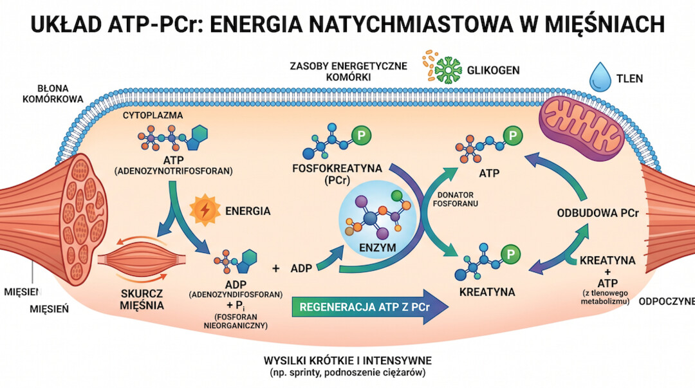
Co tak naprawde dzieje sie z Twoim cialem po piecdziesiatce?
Około 50. roku zycia cialo zaczyna grac przeciwko Tobie w dosc nieuprzejmy sposob. Badania jednoznacznie wskazuja, ze utrata masy miesniowej (sarkopenia) rozpoczyna sie na dobre wlasnie w okolicy piatej dekady zycia i postepuje w tempie 1-2% rocznie. Sila miesniowa spada jeszcze szybciej — od 1,5 do 5% rocznie. To nie sa abstrakcyjne liczby: po 10 latach oznacza to potencjalnie 15-50% mniej sily w nogach, ktore maja Cie utrzymac.
Sarkopenia to nie tylko kwestia estetyczna. WHO nadalo jej oficjalny kod ICD-10 (M62. 84) w 2016 roku jako chorobie z prawdziwego zdarzenia. Dane epidemiologiczne sa jednoznaczne: sarkopenia zwieksza ryzyko upadkow o 40% u osob po 65. roku zycia, a koszty opieki zdrowotnej zwiazane z tym schorzeniem stanowia 12-18% calkowitych kosztow leczenia chorob przewleklych w geriatrii. Sarkopenia nie istnieje w prozni — idzie ramie w ramie z osteoporoza, kruchoscia i postepujacym spadkiem funkcji poznawczych.
Mechanizmow jest kilka. Spada poziom hormonow anabolicznych: testosteron u mezczyzn obniza sie o okolo 1-2% rocznie po 30. roku zycia, a estrogen u kobiet gwaltownie spada podczas menopauzy. Rosnie opor anaboliczny — miesnie staja sie mniej wrazliwe na stymulacje bialkowa i treningowa. Nasila sie stan zapalny niskiego stopnia zwany inflamm-agingiem, ktory negatywnie wplywa na synteze bialek miesniowych i funkcje komorek satelitarnych. Do tego dochodzi gorsze wchlanianie bialka z diety i czesto jego niedobory w jadlospisie. Kreatyna jest jednym z nielicznych niehormonalnych narzedzi, ktore moga realnie zadziалac na kilka z tych mechanizmow jednoczesnie.
Jesli chcesz wiedziec wiecej o tym, jak trening silowy po piecdziesiatce hamuje sarkopenie i jakie cwiczenia sa najskuteczniejsze, mamy dla Ciebie osobny, szczegolowy artykul — warto go przeczytac razem z tym przewodnikiem o kreatynie.
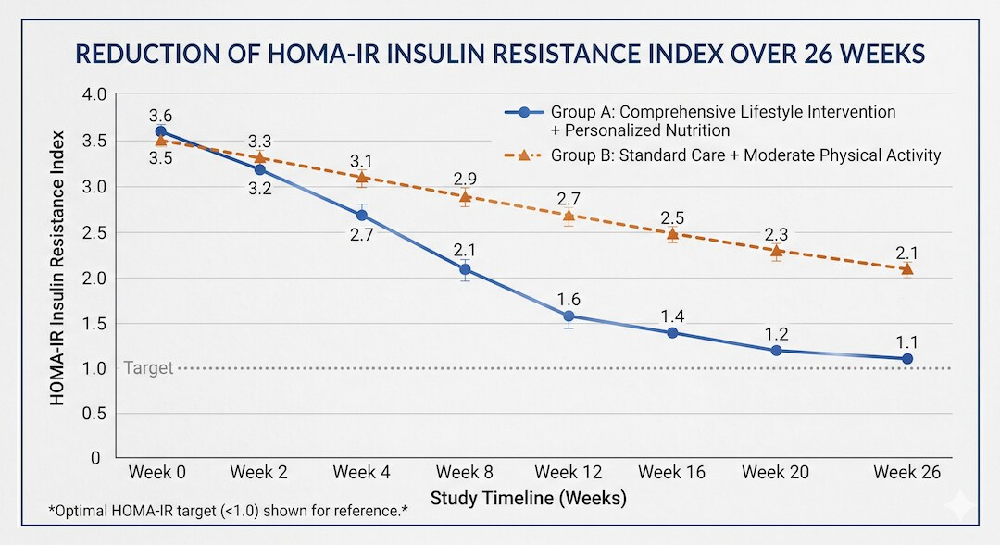
Jak kreatyna wplywa na miesnie i sile po 50-tce — co mowia badania?
Tu wchodzimy na solidny grunt naukowy. Metaanaliza opublikowana w 2024 roku na bazie danych z sierpnia 2024 roku (PMC12506341) objela 20 randomizowanych badan klinicznych z lacznie 1093 uczestnikami (69% kobiet, 31% mezczyzn) w wieku powyzej 55 lat.
Wynik jest jednoznaczny: kombinacja kreatyny i treningu wysilkowego istotnie statystycznie zwieksza sile miesniowa mierzona testem 1RM (srednia roznica 2,122 kg, p=0,001). W kontekscie osob starszych przyrost sily rzadu kilku kilogramow w wyciskaniu na klatke czy.
Mechanizmy, przez ktore kreatyna pomaga miesniom starszych osob, sa wielopoziomowe. Po pierwsze, wieksza pula fosfokreatyny przeklada sie na wiecej dostepnej energii podczas treningu — mozesz zrobic wiecej powtorzen lub uzyc wiekszego ciezaru, co generuje silniejszy bodziec anaboliczny. Po drugie, kreatyna dziala antykatabolizujaco — badania pokazuja, ze suplementacja zachowuje ulamkowa synteze bialek miesniowych i redukuje utlenianie leucyny, co oznacza mniejszy rozklad wlasnych bialek miesniowych. Po trzecie, kreatyna zwieksza objetosc komorkowa miesni poprzez ciagniecie wody do ich wnetrza (efekt wolumetrii), co samo w sobie jest sygnalem anabolicznym.
Warto tez zajrzec do metaanalizy opublikowanej w grudniu 2024 roku (Frontiers in Physiology, 2024;15:1496544), w której autorzy wprost postuluja, by kreatyna monohydrat w polaczeniu z treningiem silowym byla oficjalnie rekomendowana przez organizacje zdrowia publicznego jako niefarmakologiczna strategia zapobiegania sarkopenii. Kombinacja kreatyny i treningu silowego jest bezpieczna, skuteczna i powinna byc powszechnie stosowana u osob starszych — twierdza autorzy. Dowody naukowe istnieja i sa mocne. Problem polega na tym, ze wiekszosc lekarzy pierwszego kontaktu nadal o tym nie mowi pacjentom.
Wyniki roznia sie jednak w zaleznosci od grupy miesniowej. Kreatyna wydaje sie skuteczniej poprawiac sile gornych partii ciala niz dolnych. Efekty sa tez lepsze, gdy suplementacja trwa co najmniej 12-24 tygodnie i gdy towarzyszy jej regularny trening silowy przynajmniej 2 razy w tygodniu. Branie kreatyny bez treningu — to blad, ktory omowimy w sekcji o dawkowaniu.
Warto przyjrzec sie tez danym dotyczacym masy miesniowej (nie tylko sily). Metaanaliza z 2024 roku pokazuje, ze kreatyna w polaczeniu z treningiem istotnie zwieksza beztluszczowa mase ciala (lean body mass) u osob starszych. Co wazne, efekt nie jest tylko wodny — badania z zastosowaniem biopsji miesni pokazuja zwiekszone stezenie bialek kurczliwych i lepsza jakosc wlokien miesniowych. Kreatyna moze rowniez spowalnic apoptoze komorek satelitarnych — komorek macierzystych miesni odpowiedzialnych za ich regeneracje po uszkodzeniu. To szczegolnie istotne po piecdziesiatce, kiedy pula tych komorek sie zmniejsza i ich aktywacja przez trening staje sie trudniejsza.
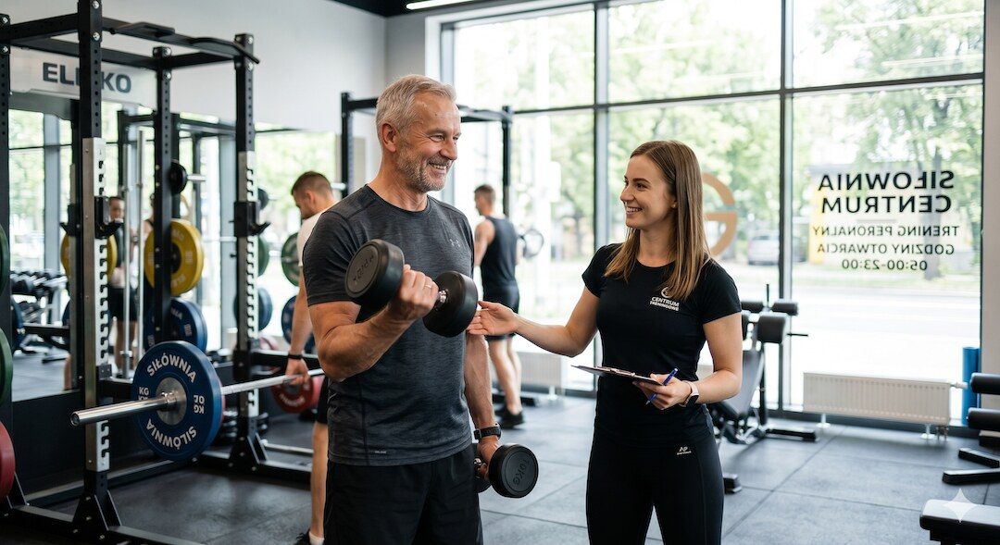
Czy kreatyna naprawde poprawia pamiec i funkcje mozgu?
To jeden z ciekawszych watkow — i coraz lepiej udokumentowany. Mozg zuzywa ogromne ilosci ATP, szczegolnie podczas intensywnego myslenia, stresu poznawczego i niedoboru snu. Kreatyna pelni w mozgu te sama funkcje co w miesniach: uzupelnia ATP z fosfokreatyny. Po piecdziesiatce poziom kreatyny w mozgu naturalnie sie obniza — szczegolnie w rejonach zaangazowanych w pamiec i funkcje wykonawcze — co moze czesciowo tlumaczac postepujace spowolnienie przetwarzania informacji.
Systematyczny przeglad z metaanaliza opublikowany w Frontiers in Nutrition (2024, PMC11275561) objal 16 randomizowanych badan klinicznych z 492 uczestnikami w wieku 20,8-76,4 lat. Wyniki wskazuja, ze kreatyna monohydrat istotnie poprawia ogolne funkcje poznawcze, pamiec i szybkosc przetwarzania informacji. Wyrazniejszy efekt obserwuje sie u osob z nizszym wyjsciowym poziomem kreatyny w mozgu — w tym u weganow i osob starszych. W zakresie uwagi wyniki sa mieszane — tutaj kreatyna nie pokazuje konsekwentnego efektu we wszystkich badaniach.
Wazne zastrzezenie: jakosc dowodow dla efektow kognitywnych oceniana jest jako umiarkowana. Wiele badan mialo male grupy uczestnikow (ponizej 50 osob), rozne protokoly suplementacji i rozne testy poznawcze, co utrudnia porownania. Nie ma podstaw, zeby twierdzic, ze kreatyna zapobiega demencji ani chorobie Alzheimera — takich danych po prostu nie ma. Natomiast dla zdrowego 55-latka, ktory czuje ze mysli wolniej niz kiedys, poprawa pamieci krotkotrwalej i szybkosci reakcji jest realnym, choc skromnym efektem.
Narracyjny przeglad z 2025 roku (PMC12832544) wprowadzil pojecie osi miesien-mozg (muscle-brain axis) jako kluczowego szlaku laczacego zdrowie miesni z funkcjami poznawczymi. Sarkopenia koreluje ze spadkiem funkcji poznawczych u starszych doroslych — interwencja jednoczesnie naprawiajaca miesnie i mozg (kreatyna plus trening) moze miec w tym sensie podwojne dzialanie, choc mechanizm wymaga dalszego wyjasnienia.
Warto wspomniec o specyficznym kontekscie, w ktorym kreatyna moze miec szczegolnie istotne dzialanie na mozg: niedobor snu. Badania pokazuja, ze suplementacja kreatyna moze redukowac negatywny wplyw niedoboru snu na funkcje poznawcze. W jednym z badan, po 24 godzinach deprywacji snu, osoby suplementujace kreatyne wykazaly istotnie lepsze wyniki w testach pamieci roboczej i czasu reakcji w porownaniu z grupa placebo. Po piecdziesiatce, gdy jakosc snu czesto sie pogarsza, ten efekt moze byc dodatkowym uzasadnieniem dla regularnej suplementacji. Nie zastapi dobrego snu — ale moze zlagodzic konsekwencje jego niedoboru. Jesli chcesz poprawic regeneracje kompleksowo, zobacz tez nasz przewodnik o snie po 50-tce i odbudowie miesni.
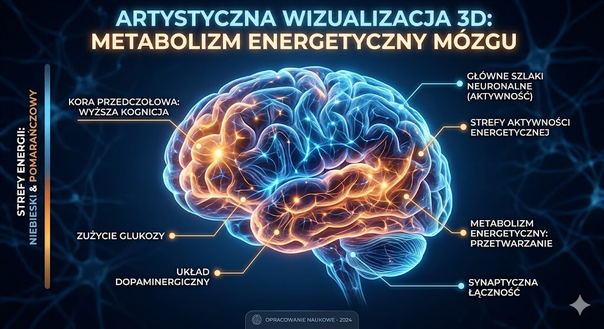
Jak bezpiecznie dawkowac kreatyne po piecdziesiatce?
Protokolow dawkowania kreatyny jest kilka i czesto wywoluja zamieszanie. Zacznijmy od tego, co jest pewne: skuteczna dawka podtrzymujaca to 3-5 g monohydratu kreatyny dziennie. Nie musisz robic zadnej fazy ladowania — nie jest ona obowiazkowa, choc skroci czas do pierwszych efektow.
Faza ladowania polega na przyjmowaniu 20-25 g dziennie przez 5-7 dni w dawkach podzielonych (4-5 razy po 5 g), po czym przechodzi sie na dawke podtrzymujaca. Efekt koncowy jest identyczny —.
Dla osob po 50-tce zalecana strategia to po prostu 3-5 g monohydratu codziennie, bez przerw, bez cykli. Kilka praktycznych uwag: kreatyna wchlania sie lepiej z weglowodanami i bialkiem — zjedzona przy posilku lub popita sokiem dziala nieco lepiej niz na pusty zoladek, bo insulina wspomaga transport kreatyny do miesni. Na treningu lub w dniu odpoczynku — nie ma istotnej roznicy klinicznej. Mieszac mozna z woda, sokiem owocowym, shake-iem proteinowym — co lubisz.
Wazna informacja dla osob z nizsza masa ciala lub mniejsza masa miesniowa (typowe u kobiet po menopauzie): dawka 3 g/dzien moze byc w pelni wystarczajaca. Dawki powyzej 5 g/dzien przy dlugotrwalej suplementacji nie daja dodatkowych korzysci u wiekszosci doroslych — nadmiar kreatyny jest wydalany z moczem jako kreatynina. Jesli przyjmujesz metformine, inhibitory pompy protonowej, NLPZ lub leki na nerki lub serce — skonsultuj suplementacje z lekarzem.
Sprawdz tez nasz artykul o suplementacji po 50-tce, w ktorym omawiamy kompleksowo witamine D3, magnez, omega-3 i inne kluczowe skladniki dla zdrowia w dojrzalym wieku. Kreatyna dziala najlepiej jako element szerszego podejscia — nie jako samodzielne rozwiazanie.
Odrebna kwestia to suplementacja kreatyna u kobiet po menopauzie. Ta grupa byla historycznie niedoreprezentowana w badaniach nad kreatyna — wiekszy nacisk kladziono na mezczyzn. Nowsze badania nadrabiaja te zaniedbalosci i pokazuja, ze kobiety po menopauzie moga odnosic szczegolne korzysci z suplementacji — zarowno pod wzgledem masy miesniowej, sily, jak i gestosc kostnej. Dawkowanie jest identyczne: 3-5 g monohydratu dziennie. Nie ma podstaw naukowych do wyzszego dawkowania u kobiet. Kreatyna nie wplywa na profil hormonalny — nie zmienia poziomu estrogenu ani FSH. Nie ma rowniez dowodow na niekorzystny wplyw na cholesterol, cisnienie krwi czy poziom glukozy u tej grupy.
- Dawka podtrzymujaca: 3-5 g monohydratu dziennie
- Faza ladowania (opcjonalna): 20-25 g przez 5-7 dni w 4-5 dawkach
- Najlepiej przyjmowac z posilkiem zawierajacym weglowodany i bialko
- Nie ma potrzeby cyklowania ani przerw w suplementacji
- Przy masie ciala ponizej 65 kg: 3 g/dzien moze byc wystarczajace
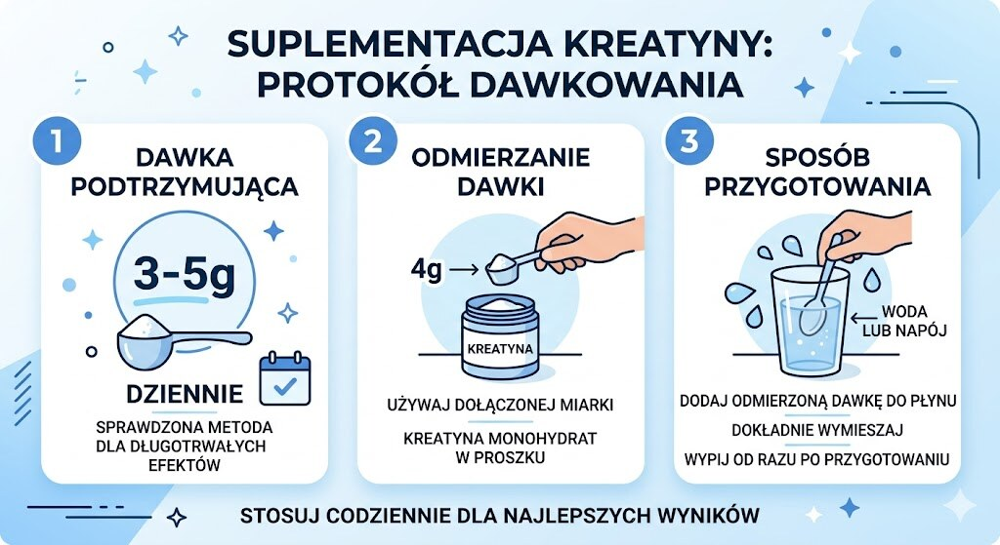
Czy kreatyna niszczy nerki i watrobe — prawda czy mit?
To bodaj najczestszeobawy, z ktorymi spotykaja sie ludzie po piecdziesiatce zainteresowani kreatyna. Lekarz powiedzial nie, sasiad ostrzegal, a Google podpowiada dramatyczne naglowki. Wiec sprawdzmy fakty. Przeglad z BMJ Open Sport and Exercise Medicine (Candow i wsp., 2022) jednoznacznie stwierdza: suplementacja kreatyna nie wykazuje niekorzystnego wplywu na funkcje nerek ani watroby. Analogiczne wnioski powtarza sie w dziesiactkach przeglodow opublikowanych przez ostatnich 30 lat badan nad kreatyna.
Skad wiec ten mit? Kreatyna metabolizuje sie w organizmie do kreatyniny, ktora jest wydalana przez nerki. Kreatynina to standardowy marker uzywany do oceny funkcji nerek w podstawowej morfologii krwi. Suplementacja kreatyna podwyzsza poziom kreatyniny w moczu i surowicy — ale to wylacznie wynik zwiekszonego metabolizmu kreatyny, nie uszkodzenia filtracji klebuszkowej. Lekarze nieobeznani z tym zjawiskiem moga alarmowac pacjenta na podstawie podwyzszonej kreatyniny, nie wiedzac, ze bierze on kreatyne. Prawdziwa funkcja nerek oceniana jest wspolczynnikiem eGFR, a nie sama kreatynina.
Wazne zastrzezenie: jesli masz zdiagnozowana chorobe nerek (CKD), suplementacja wymaga scislego monitoringu i konsultacji lekarskiej. U osob z prawidlowa funkcja nerek ryzyko nie istnieje. Cystatyna C — dokladniejszy biomarker funkcji nerek nieoparty na kreatyninie — nie wykazuje zmian po suplementacji kreatyna nawet przy dlugotrwalym stosowaniu. FDA w 2020 roku oficjalnie uznala kreatyne za substancje ogolnie bezpieczna (status GRAS — Generally Recognized As Safe).
Kreatyna a zdrowie nerek po 50-tce – co mówią badania?
Najkrótsza odpowiedź brzmi: u zdrowych dorosłych badania nie pokazują, żeby standardowa suplementacja kreatyną pogarszała pracę nerek. Problem zwykle bierze się z błędnej interpretacji kreatyniny, a nie z realnego uszkodzenia filtracji. Ostrożność jest potrzebna dopiero przy istniejącej chorobie nerek, lekach nefrotoksycznych lub nieprawidłowym eGFR.
Warto tez obalic inne mity: kreatyna nie niszczy wlosow (jeden kontrowersyjny artykul z 2009 roku sugerowal zwiazek z DHT, ale nie z wypadaniem wlosow, a badanie nie zostalo zreplikowane). Kreatyna nie powoduje skurczow miesniowych — badania tego nie potwierdzaja. Kreatyna poprawia nawodnienie wewnatrzkomorkowe, co moze zmniejszac ryzyko kurczow. I nie, kreatyna to nie steryd anaboliczny.
Jedna z rzadziej omawianych korzysci kreatyny po piecdziesiatce jest jej potencjalne dzialanie kardioprotekcyjne. Serce to miesien, ktory rowniez korzysta z systemu ATP-PCr. Badania laboratoryjne i kliniczne wskazuja, ze kreatyna moze chronić miokardium (miesien sercowy) w warunkach niedokrwienia przez podtrzymanie zasobow fosfokreatyny w sercu. Dowody kliniczne sa na razie ograniczone i nie ma wskazan do stosowania kreatyny jako leku kardiologicznego. Niemniej u aktywnych osob po piecdziesiatce suplementacja kreatyna nie zwieksza ryzyka kardiologicznego — i moze miec marginalne dzialanie ochronne na serce podczas intensywnego wysilku.
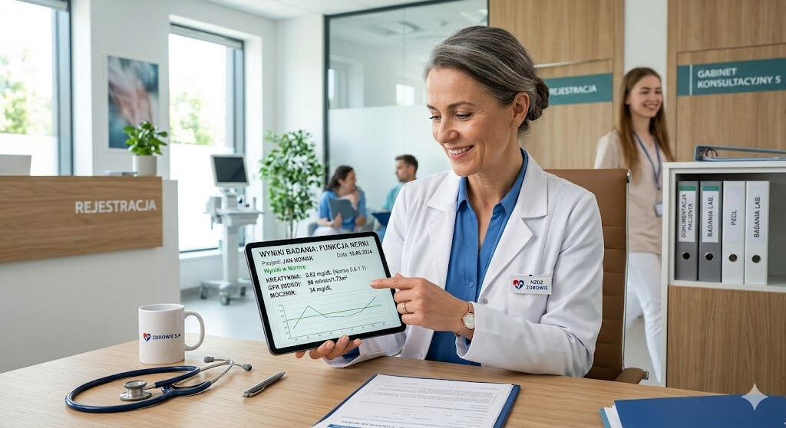
Kreatyna a kosci — czy chroni przed osteoporoza po 50-tce?
Osteoporoza jest blizniaczą siostrzą sarkopenii — obie nasilaja sie po piecdziesiatce, obie zwiekszaja ryzyko zlamowc, obie rzadko bola dopoki nie jest za pozno. Czy kreatyna moze pomoc? Dowody sa tu slabsze niz w przypadku miesni, ale obiecujace.
Przeglad Candow i wsp. (PMC6518405) wskazuje, ze kreatyna moze miec korzystny wplyw na gestosc mineralna kosci — ale efekt ten widoczny jest przede wszystkim w polaczeniu z treningiem oporowym, a nie samej suplementacji. Mechanizm jest.
Metaanaliza z 2024 roku (PMC12506341) oceniala wplyw kreatyny i treningu na gestosc mineralna kosci (BMD) u osob powyzej 55 lat. Wyniki sa niejednoznaczne — czesc badan pokazuje statystycznie istotna poprawe BMD, inne nie. Heterogenicznosc metodologiczna sprawia, ze trudno wyciagnac kategoryczne wnioski. Nie ma podstaw, zeby twierdzic, ze kreatyna zastepuje leki na osteoporoze. Moze byc jednak sensownym uzupelnieniem farmakoterapii i programu cwiczen, szczegolnie u kobiet po menopauzie.
Istnieje jeszcze jeden mechanizm godny uwagi: kreatyna moze bezposrednio wplywac na komorki kostne poprzez zwiekszenie ekspresji IGF-1 i zmniejszenie ekspresji miostatyny. Te efekty sa dobrze udokumentowane w badaniach in vitro i na modelach zwierzecych, ale translacja na czlowieka w badaniach klinicznych pozostaje niepelna. Wnioski praktyczne: kreatyna plus trening silowy to rozsadna strategia wspierajaca zdrowie kosci — ale nie wystarczy sama suplementacja bez cwiczen i odpowiedniej podazy wapnia oraz witaminy D.
Wiecej o suplementacji po piecdziesiatce — w tym o witaminie D3, wapniu, magnezie i innych kluczowych skladnikach wspierajacych zdrowie kosci — znajdziesz w naszym kompleksowym przewodniku.
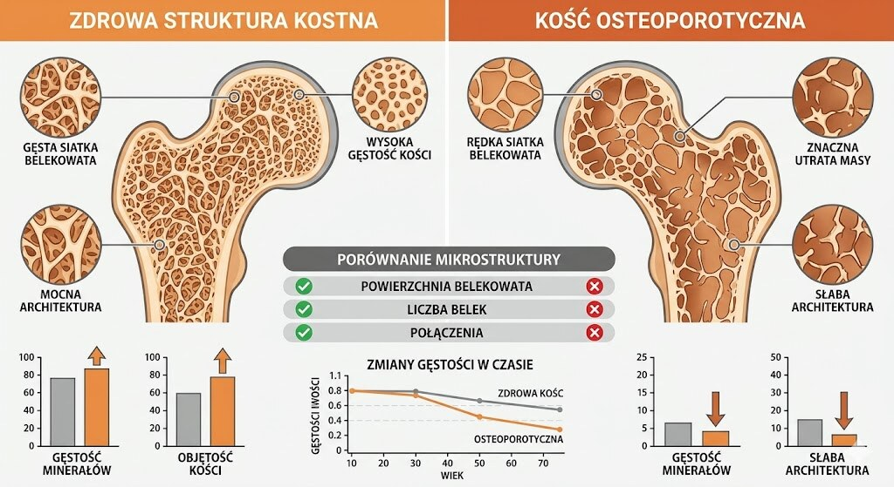
Monohydrat czy inne formy kreatyny — co wybrac po 50-tce?
Na rynku dostepnych jest ponad kilkanascie form kreatyny: monohydrat, jabłczan (tri-creatine malate), chlorowodorek (HCl), buforowana (Kre-Alkalyn), ester etylowy i dziesiatki innych. Marketing sugeruje, ze nowsze formy sa lepiej przyswajalne i lagodniejsze dla zoladka. Nauka mowi cos innego. Monohydrat kreatyny ma biodostepnosc siegajaca 99% i jest zdecydowanie najlepiej przebadana forma — setki badan klinicznych, dziesiatki metaanaliz, 30 lat obserwacji bezpieczenstwa.
Zadna alternatywna forma kreatyny nie wykazala w bezposrednim porownaniu klinicznym wyzszosci nad monohydratem pod wzgledem skutecznosci w budowaniu sily lub masy miesniowej. Badanie Eghbaliego i wsp. (2024) porownujace HCl z monohydratem u trenujacych mezczyzn nie wykazalo istotnych roznic w efektach. Australijski Instytut Sportu zaklasyfikowal monohydrat kreatyny do grupy A — suplementow o udowodnionej naukowo skutecznosci — nie przyznajac takiej klasyfikacji zadnej innej formie. Wniosek: jesli monohydrat nie powoduje u Ciebie problemow trawiennych, nie ma powodu do przeplacania za inne formy.
Jesli jednak masz wrazliwy zoladek i doswiadczasz wzdec lub dyskomfortu przy monohydracie, alternatywa warta rozwazenia jest jablczan kreatyny (lepiej sie rozpuszcza) lub mikronizowany monohydrat (drobniejsze czasteczki, lagodniejszy dla jelit). Kre-Alkalyn byl reklamowany jako forma nierozpuszczajaca sie do kreatyniny w kwasnym srodowisku zoladkowym — jednak badania nie potwierdzily jej wyzszosci. Kupujac kreatyne, szukaj certyfikatu Creapure (producent: AlzChem, Niemcy) — to najlepiej zbadana, czysta farmakologicznie postac monohydratu, wolna od zanieczyszczen.
Jeszcze jeden aspekt wart omowienia: kreatyna a sila uchwytu dloni. Sila chwytu jest uznanym markerem ogolnej sprawnosci i dlugosci zycia — silniejszy chwyt koreluje z mniejsza smiertelnoscia w populacjach starszych doroslych. Badania pokazuja, ze kreatyna w polaczeniu z treningiem moze poprawiac sile chwytu u seniorow. To bardzo praktyczny wynik: silniejszy chwyt oznacza lepsze otwieranie sloikow, bezpieczniejsze wchodzenie po schodach (trzymanie porecz) i wyzsze poczucie sprawczosci. Nie brzmi glamourowo, ale w kontekscie samodzielnosci po siedemdziesiatce — jest bezcenne.
- Monohydrat: najlepsza biodostepnosc (99%), najlepiej przebadany, najtanszy
- Mikronizowany monohydrat: lepiej sie rozpuszcza, lagodniejszy dla zoladka
- Jablczan: dobra alternatywa przy problemach trawiennych z monohydratem
- HCl i Kre-Alkalyn: brak dowodow na przewage nad monohydratem
- Szukaj certyfikatu Creapure — gwarancja czystosci i badanej jakosci
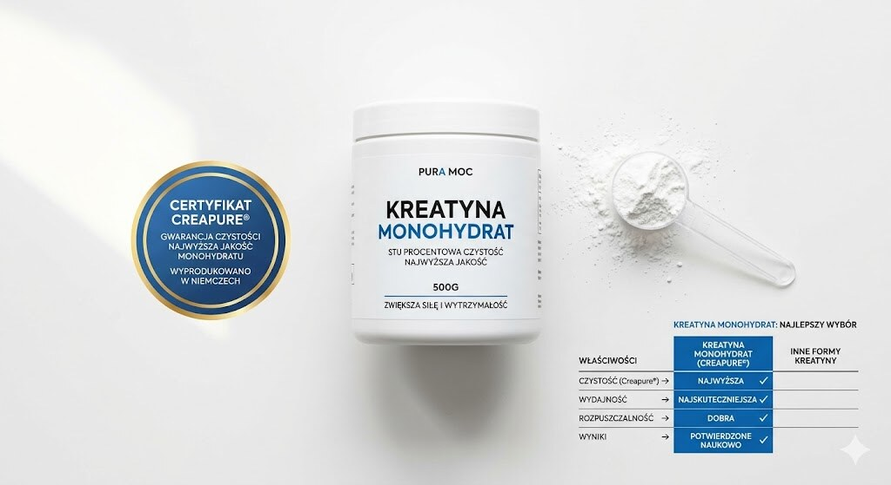
Kreatyna a nawodnienie i styl zycia — co jeszcze musisz wiedziec?
Kreatyna jest substancja osmotycznie czynna — przyciaga wode do komorek miesniowych. To kluczowy element jej dzialania, ale ma tez praktyczne implikacje. Przy suplementacji kreatyna przez pierwsze 1-2 tygodnie mozesz zauwazyc przyrost masy ciala o 0,5-2 kg — to woda w miesniach, nie tluszcz.
Po piecdziesiatce, kiedy miesnie sa gorzej nawodnione niz w mlodosci, ten efekt jest wrecz korzystny: lepiej nawodnione miesnie kurcza sie efektywniej i szybciej sie regeneruja. Woda gromadzi sie wewnatrz.
Kwestia nawodnienia przy kreatynie: pij wiecej wody. Nie dlatego, ze kreatyna odwadnia (mit! ), ale dlatego, ze zwiększony metabolizm i aktywnosc fizyczna, ktora wspierasz kreatyna, wymagaja wiekszego nawodnienia. Praktyczna zasada: dodatkowe 400-600 ml wody dziennie w dniach suplementacji, szczegolnie jesli aktywnie trenujesz. Przy gorącym klimacie — nawet wiecej. Kofeina a kreatyna: przez lata funkcjonowalo przekonanie, ze kofeina znosi efekt kreatyny. Nowsze badania temu przeczą — nie ma przekonujacych dowodow na interferencje obu substancji przy typowych dawkach.
Co z weganami i wegetarianami po 50-tce? Osoby niejedzace miesa maja naturalnie nizszy bazowy poziom kreatyny w miesniach i mozgu — i reaguja na suplementacje wyrazniej niz miezoziercy. Poprawa sily, masy miesniowej i funkcji poznawczych jest u nich statystycznie wieksza. Jesli jestes weganinem po piecdziesiatce — kreatyna to prawdopodobnie jeden z najwazniejszych suplementow, o ktorych powinienes pomyslec, obok witaminy B12, D3, omega-3 z algami i zelaza.
Ciekawa kwestia dotyczy interakcji kreatyny z innymi powszechnymi suplementami stosowanymi po piecdziesiatce. Kreatyna i magnez: brak znanych niekorzystnych interakcji — oba skladniki wspieraja funkcje miesniowe, choc przez rozne mechanizmy. Kreatyna i witamina D3: synergistyczne dzialanie w kontekscie zdrowia miesni i kosci — wielu badaczy uwaza, ze to duet wart polaczenia. Kreatyna i omega-3: podobnie — brak interferencji, mozliwy efekt synergii w zakresie zdrowia struktury blon komorkowych miesni. Kreatyna i bialko serwatkowe: idealne polaczenie po treningu — bialko dostarcza aminokwasow do syntezy, kreatyna uzupelnia fosfokreatyne. Mozesz je mieszac w jednym shaku.
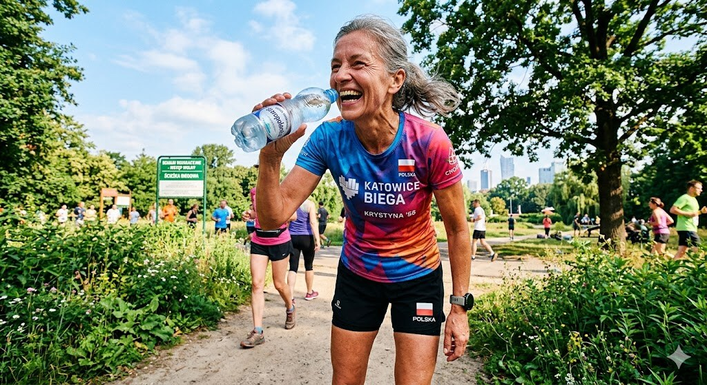
Jakie bledy popelniaja ludzie po 50-tce biorac kreatyne?
Blad numer jeden: branie kreatyny bez treningu silowego. Kreatyna to nie czarodziejski proszek — bez odpowiedniego bodzca mechanicznego (treningi z oporem) jej potencjal anaboliczny jest niemal zerowy. Badania konsekwentnie pokazuja, ze efekty kreatyny na mase i sile miesniowa sa istotne statystycznie tylko wtedy, gdy towarzyszy jej regularny trening oporowy przynajmniej 2 razy w tygodniu. Samo branie kreatyny lezac na kanapie nie zbuduje Ci miesni. Zbuduje Ci oczekiwania i rozczarowanie.
Blad numer dwa: nieregularnosc. Kreatyna dziala na zasadzie kumulacji — miesnie musza byc nasycone. Branie jej czasami lub tylko w dni treningowe zmniejsza efektywnosc. Codzienne 3-5 g to jedyna sensowna strategia dlugoterminowa. Blad numer trzy: zbyt krotki czas obserwacji. Wielu ludzi po 50-tce oczekuje efektow po 2 tygodniach i rezygnuje. Pelne nasycenie miesni bez fazy ladowania zajmuje 3-4 tygodnie, a mierzalne efekty silowe — minimum 4-8 tygodni regularnego stosowania przy aktywnym treningu.
Blad numer cztery: kupowanie przypadkowych marek bez certyfikatow. Na rynku sa produkty z zanieczyszczeniami — diketo-piperazyna i kreatynina jako produkty degradacji kreatyny przy zlym przechowywaniu lub niskiej jakosci produkcji. Certyfikat Creapure, Informed-Sport lub NSF Certified for Sport to minimalne standardy jakosci. Blad numer piec: oczekiwanie efektow bez adekwatnej podazy bialka w diecie. Kreatyna nie zastapi bialka — miesnie potrzebuja aminokwasow do budowy. Osoby po 50-tce powinny celowac w 1,6-2,2 g bialka na kg masy ciala dziennie.
Wiecej o optymalnej diecie po piecdziesiatce — z konkretnymi zrodlami bialka, przelicznikami i zasadami zywienia — w naszym kompleksowym przewodniku. Kreatyna i bialko to duet, nie alternatywy.
Blad numer szesc — i chyba najglebszy: traktowanie kreatyny jako kompensacji za brak ruchu. Wielu mezczyzn po piecdziesiatce szuka pigulki lub proszku, ktory zastapi cwiczenia. Kreatyna nie jest takim rozwiazaniem. Jest narzedziem dla osob, ktore juz sie ruszaja i chca robic to skuteczniej. Analogia: kreatyna to jak dobry olej silnikowy — nie naprawi zepsutego silnika, ale dobry silnik z dobrym olejem dziala znacznie dluzej i sprawniej. Jesli dopiero zaczynasz byc aktywny po piecdziesiatce, pierwsze trzy miesiace regularnego treningu daja efekty bez zadnych suplementow — to tzw. efekt nowicjusza, z ktorym trudno konkurowac nawet najlepszym suplementom.
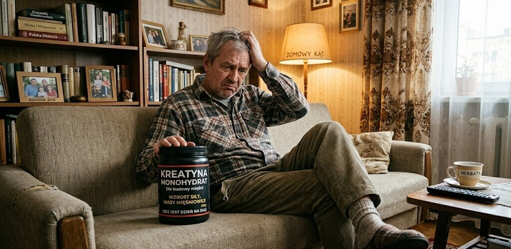
Dla kogo kreatyna po 50-tce jest szczegolnie wazna i kto powinien uwazac?
Kreatyna nie jest dla kazdego jednakowo wazna. Osoby, ktore moga zyskac na niej najwyzej po piecdziesiatce, to: wegetarianie i weganie (niski bazowy poziom), kobiety po menopauzie (szybka utrata miesni i kosci), osoby z sarkopenia lub jej ryzykiem, aktywni seniorzy z celem poprawy sprawnosci i prewencji upadkow, oraz osoby chcace poprawic funkcje poznawcze przy niskiej diecie bialkowej.
Kreatyna ma sens przede wszystkim wtedy, gdy polaczona jest z treningiem silowym — bez niego efekty.
Kto powinien zachowac ostroznosc lub skonsultowac sie z lekarzem? Osoby z przewlekla choroba nerek (CKD) — ta populacja wymaga monitoringu. Osoby z chorobami watroby — brak wystarczajacych danych dla tej grupy. Pacjenci przyjmujacy leki nefrotoksyczne. I wszystkie osoby z niewyjasniona podwyzszona kreatynina w badaniach krwi — najpierw ustal przyczyne, potem suplementuj. Kobiety w ciazy i mamy karmicne powinny unikac kreatyny ze wzgledu na brak wystarczajacych danych bezpieczenstwa.
Miedzynarodowe Towarzystwo Zywienia Sportowego (ISSN) w swoim stanowisku stwierdza wprost: nie ma naukowych dowodow, ze krotko- lub dlugoterminowe stosowanie monohydratu kreatyny ma jakikolwiek szkodliwy wplyw na zdrowe osoby doroslych. Po 30 latach badan i dziesiactkach milionow uzytkownikow na calym swiecie — to mocna deklaracja poparta solidna nauka.
Na koniec argument ekonomiczny — bo kreatyna to tez kwestia stosunku wartosci do ceny. Monohydrat kreatyny jest jednym z najtanszych skutecznych suplementow diety na rynku. Miesiac suplementacji kosztuje w Polsce okolo 15-30 zlotych (3-5 g dziennie x 30 dni z przecietnego 500 g opakowania za 40-60 zl). W przeliczeniu na potwierdzone efekty naukowe — zachowanie masy i sily miesniowej, poprawa regeneracji, ewentualna poprawa kognicji — stosunek cena-jakosc jest trudny do pobicia wsrod suplementow. Dla porownania: wiele popularnych boosterow przedtreningowych kosztuje kilkakrotnie wiecej i jest znacznie gorzej udokumentowanych niz monohydrat kreatyny stosowany od 30 lat.
- Szczegolne wskazania: weganie, kobiety po menopauzie, osoby z sarkopenia, aktywni seniorzy
- Szczegolna ostroznosc: choroba nerek (CKD), choroba watroby, leki nefrotoksyczne
- Bezpieczna dla zdrowych doroslych wedlug ISSN, FDA (GRAS) i setek badan klinicznych
- Przed suplementacja warto zbadac kreatynine i eGFR jako punkt wyjscia
Jak wyglada praktyczny protokol startowy dla osoby po 50-tce?
Zamiast teorii — konkretny plan. Decydujesz sie zacznac suplementowac kreatyne po piecdziesiatce. Co robic? Krok pierwszy: wykonaj podstawowe badania krwi przed startem — morfologia, kretynina, eGFR, watroba (ALT, AST), lipidogram. Nie dlatego, ze kreatyna jest niebezpieczna, ale dlatego, ze chcesz miec punkt wyjscia do porownan po kilku miesiacach.
Jesli masz juz niedawne wyniki — nie trzeba powtarzac. Krok drugi: kup monohydrat kreatyny z certyfikatem Creapure, Informed-Sport lub NSF — w Polsce dostepny.
Krok trzeci: zacznij od 3-5 g dziennie z pierwszym posilkiem dnia (lub z posilkiem potreningowym). Nie komplikuj — miarka kreatyny do smoothie, soku pomaranczowego lub shake-a proteinowego. Krok czwarty: do kreatyny dorzuc regularny trening silowy — minimum 2 razy w tygodniu, skupiony na cwiczeniach wielostawowych (przysiady, wyciskania, wiosla, martwy ciag lub ich bezpieczniejsze modyfikacje). Bez tego krok drugi i trzeci sa bez sensu. Krok piaty: daj temu 8-12 tygodni i ocen efekty — sila na kluczowych cwiczeniach, samopoczucie po treningu, regeneracja. Nie oczekuj cudu po dwoch tygodniach. Zobacz tez, jak wyglada trening silowy a starzenie komorkowe i dlaczego ten bodziec dziala az na poziomie DNA.
Po 3-6 miesiacach mozesz powtorzyc podstawowe badania krwi i porownac wyniki. Z ogromnym prawdopodobienstwem zobaczysz nieznacznie podwyzszona kreatynine w surowicy — to normalne i niegrozone. Wskaznik eGFR powinien pozostac bez zmian lub w granicach normy. Jesli efekty treningowe sa satysfakcjonujace, kontynuuj suplementacje bezterminowo — nie ma naukowych podstaw do wymuszonego przerywania u zdrowych doroslych. Kreatyna to nie antybiotyk — nie traci skutecznosci przy ciaglym stosowaniu.
- Krok 1: badania krwi przed startem (kreatynina, eGFR) — punkt odniesienia
- Krok 2: kup monohydrat z certyfikatem Creapure lub Informed-Sport
- Krok 3: 3-5 g dziennie z posilkiem, bez fazy ladowania
- Krok 4: trening silowy minimum 2 x w tygodniu — bez tego nie ma efektu
- Krok 5: ocen efekty po 8-12 tygodniach i sprawdz badania po 3-6 miesiacach
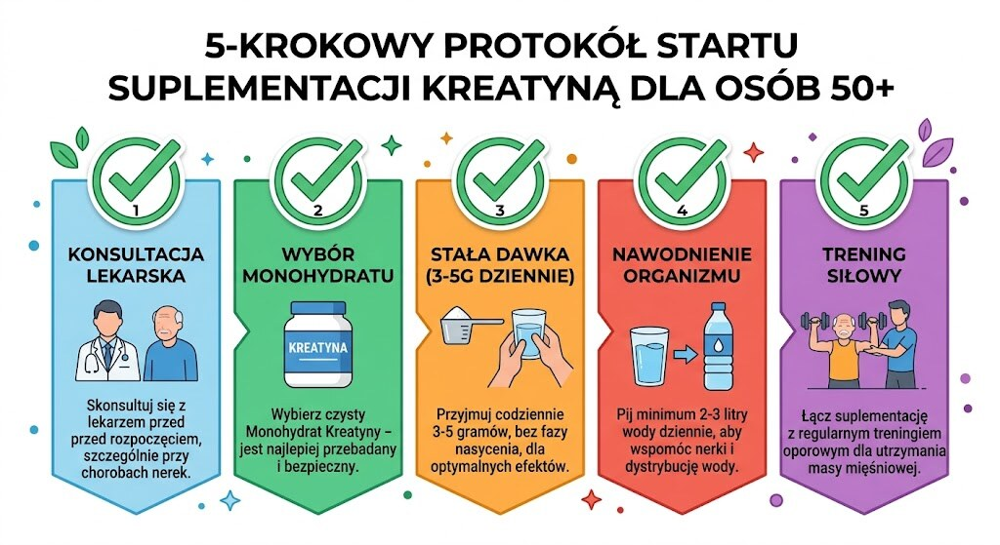
Najczęściej zadawane pytania
Najczęściej zadawane pytania
Czy kreatyna jest bezpieczna po 50-tce?
Tak — u zdrowych doroslych kreatyna monohydrat jest bezpieczna niezaleznie od wieku. Dziesiatki metaanaliz i FDA (status GRAS) potwierdzaja brak szkodliwego wplywu na nerki, watrobe i serce u osob bez chorob przewleklych tych narzadow. Osoby z CKD lub innymi schorzeniami nerek powinny skonsultowac suplementacje z lekarzem.
Powiązane tematy: trening siłowy, dieta po 50-tce, sen i regeneracja, suplementacja.
Powiązane tematy: trening siłowy, dieta po 50-tce, sen i regeneracja, suplementacja.
Ile kreatyny brac po 50-tce?
Standardowa i skuteczna dawka to 3-5 g monohydratu kreatyny dziennie, bez koniecznosci fazy ladowania. Przy nizszej masie ciala lub mniejszej masie miesniowej (np. u kobiet po menopauzie) 3 g/dzien jest w pelni wystarczajace. Kreatyne warto przyjmowac z posilkiem zawierajacym weglowodany i bialko.
Czy kreatyna pomaga na pamiec i mozg po 50-tce?
Badania wskazuja na umiarkowana poprawe pamieci, szybkosci przetwarzania informacji i funkcji wykonawczych — szczegolnie u osob z niskim bazowym poziomem kreatyny (wegetarianie, osoby starsze). Efekty sa mierzalne i oparte na danych z randomizowanych badan klinicznych. Kreatyna nie zapobiega demencji — na to brak dowodow.
Czy kreatyna niszczy nerki?
Nie — to jeden z najlepiej obalonych mitow w zywieniu sportowym. Suplementacja kreatyna podwyzsza poziom kreatyniny (produkt jej metabolizmu), ale nie uszkadza filtracji klebuszkowej mierzonej wskaznikiem eGFR. Przegady naukowe i FDA potwierdzaja bezpieczenstwo kreatyny dla nerek u zdrowych doroslych.
Jaka forma kreatyny jest najlepsza po 50-tce?
Monohydrat kreatyny — najlepiej przebadana forma z biodostepnoscia 99%, zaklasyfikowana przez Australijski Instytut Sportu do grupy A (skutecznosc udowodniona naukowo). Zadna inna forma nie wykazala przewagi w bezposrednich porownaniach. Przy problemach trawiennych warto wyprobowac mikronizowany monohydrat lub jablczan kreatyny.
Czy kreatyna dziala bez treningu silowego?
W zakresie masy i sily miesniowej — efekty bez treningu sa minimalne. Kreatyna wzmacnia bodziec treningowy, nie zastepuje go. Jedynym obszarem, gdzie moze dzialac rowniez bez cwiczen, sa funkcje kognitywne — ale i tu efekty sa wyrazniejsze u osob aktywnych fizycznie.
Źródła
Źródła po 50-tce warto wdrażać krok po kroku i od razu łączyć teorię z praktyką. Dzięki temu łatwiej utrzymać regularność, poprawić bezpieczeństwo działań i szybciej zauważyć trwałe efekty zdrowotne w codziennym życiu.
- Metaanaliza: kreatyna i trening silowy u starszych doroslych — 1093 uczestnikow, sierpien 2024, PMC12506341
- Frontiers in Physiology 2024: kreatyna plus trening oporowy jako strategia leczenia sarkopenii
- Frontiers in Nutrition 2024: kreatyna a funkcje poznawcze — metaanaliza 16 RCT, 492 uczestnikow
- PMC12832544 2025: os miesien-mozg i kreatyna u starszych doroslych — przeglad narracyjny
- Candow i wsp. 2022: kreatyna wobec sarkopenii, osteoporozy, kruchosci i kacheksji — ScienceDirect Bone
- PMC6518405: skutecznosc kreatyny u starzejacych sie miesni i kosci — prewencja upadkow
- Tandfonline 2025: kreatyna monohydrat dla starszych doroslych i populacji klinicznych
- Metaanaliza Nutrients 2024: kreatyna i trening silowy a sila miesniowa u doroslych — PMC11547435
- Oxford Academic Nutrition Reviews 2025: kreatyna i poznanie u starszych doroslych — przeglad systematyczny
- ISSN stanowisko: brak szkodliwego wplywu monohydratu kreatyny na zdrowych doroslych
Uwaga: Artykuł ma charakter informacyjny i edukacyjny. Nie zastępuje konsultacji lekarskiej, diagnozy ani leczenia.